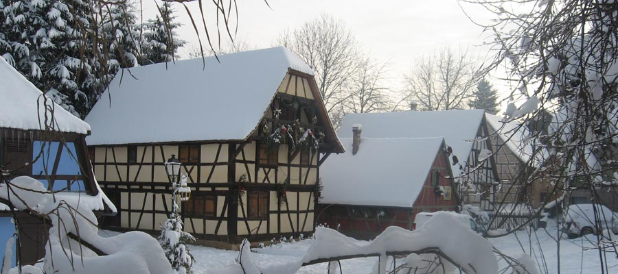

Horarios
Del 1 de abril a mediados de octubre: miércoles y jueves de 14:00 a 17:00; domingos pares de 14:00 a 18:00. Fuera de las vacaciones escolares francesas.

Prepare su visita
Descubra el parque libremente o con guía. Los grupos y colegios son bienvenidos con cita previa.
Del 1 de abril a mediados de octubre: miércoles y jueves de 14:00 a 17:00; domingos pares de 14:00 a 18:00. Fuera de las vacaciones escolares francesas.
2,50 € para mayores de 14 años; 2 € por persona para grupos de más de 20; 3 € por alumno con una actividad incluida.
Rally de descubrimiento, vida rural y huevos coloreados naturalmente para acercar el patrimonio a los niños.
Rue du Terrain, 67116 Reichstett, después del parque de cigüeñas y a unos 10 km al norte de Estrasburgo.